t29 第 1 轮：服务商列表、状态栏、对话面板第一屏
删除服务商放在列表条目的哪里？
推荐 A：条目上只有“删除”这一个动作，直接给图标少点一次；右键是第二条路，点了都先弹现在的确认框。
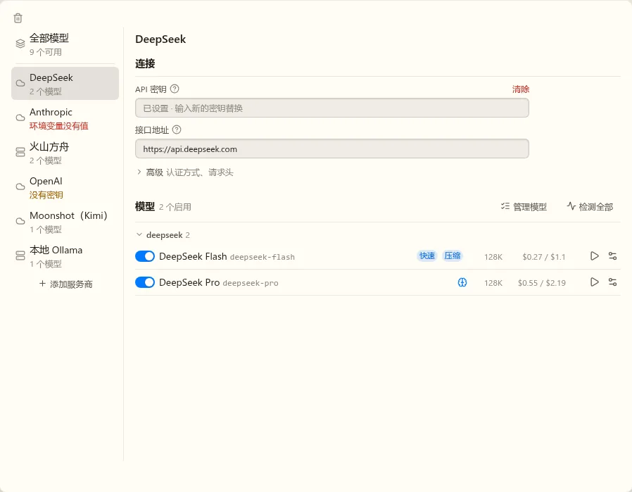
现在：删除是页面标题区的垃圾桶（设置窗口里在右上角）。
A 悬停出删除图标，右键也能删
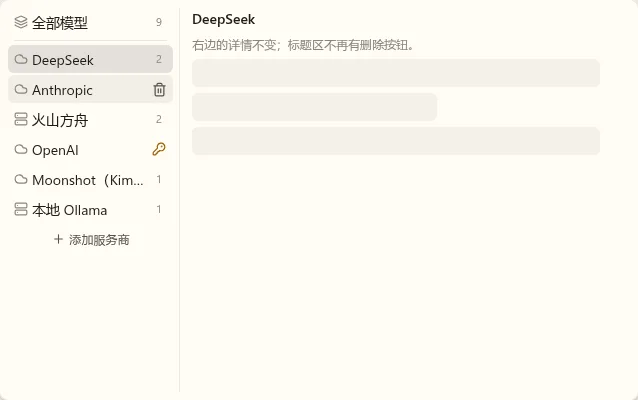
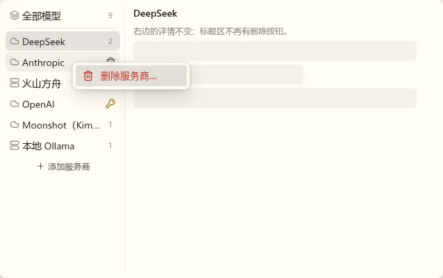
B 悬停出“…”，点开是菜单
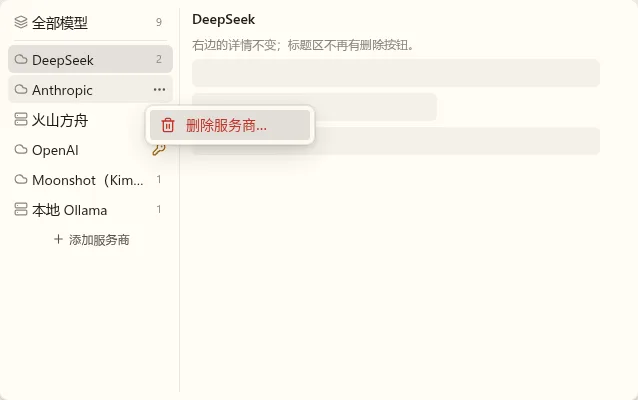
以后条目上的动作多了（例如复制、检测）更好放；现在只有一项。右键同样打开这个菜单。
服务商条目改成单行，还是两行收紧？
推荐 A 单行：高度与设置窗口左栏一样；密钥问题改成行尾的图标（悬停写原因），没问题时写启用了几个模型。
A 单行
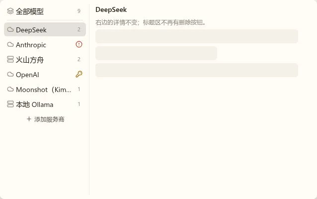
Anthropic 的红色图标是“环境变量没有值”，OpenAI 的钥匙是“没有密钥”。原因要悬停或点进详情才看得到。
B 两行收紧
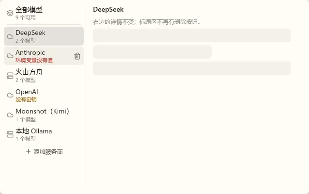
原因直接写在第二行，条目从 46px 降到 38px 左右。
状态栏的自定义照这三张图做？
推荐同意：右键改显隐、设置里改顺序，缺省与现在一样；提醒类的项总会显示。
右键状态栏

设置里的“状态栏”

改过之后
- 可选的项：上下文用量、用量与缓存命中、费用、模型与推理档、缓存倒计时，以及插件加的项（标“插件”）。累计、输入、输出、缓存命中合成一项，免得菜单太长；要分开就在设置里拆。
- 总会显示、不能关：运行阶段与用时、等你处理、等重发、费用超过告警线、“全部放行”警告、断线。
- 设置里分“左边”“右边”两组，拖动或用上移、下移排序；全局一份，所有会话与窗口共用，存进用户设置文件。
- 右栏窄时，右边按顺序从前往后收进悬停，费用最后收。
- 缓存倒计时只对缓存时长明确的服务商（Anthropic）显示；过期后写“已过期”。
没选会话时，对话面板的第一屏放什么？
推荐 A：视图标题已经写着“对话”，“未选择会话”这一行去掉；空出来的地方放最近的会话，点一下就能接着聊，不用去左边找。
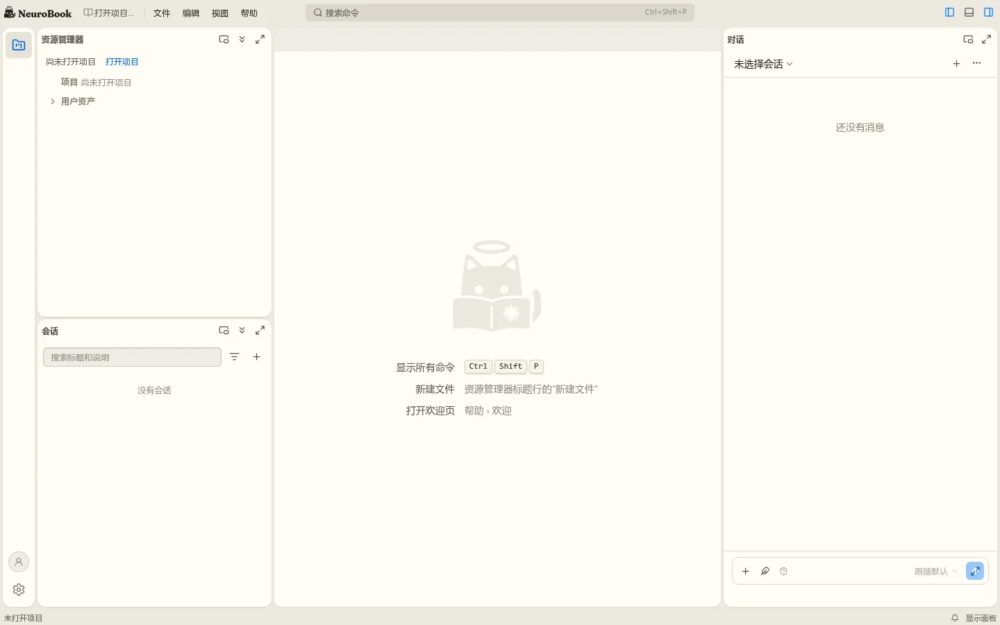
现在：右栏顶上一行“未选择会话”，消息区上下各一条横线，“还没有消息”贴在上面。
A 开始一段对话与最近的会话
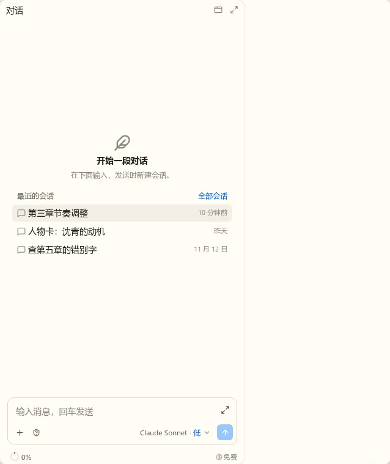
最近 3 条，“全部会话”打开会话列表。没有会话时只留上半部分。
B 只留一句提示
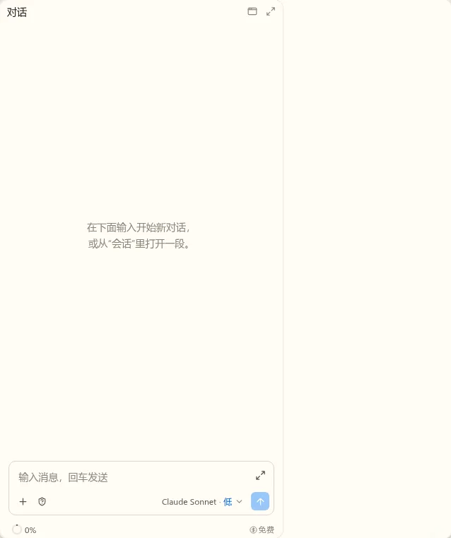
最简单；打开旧会话要去左边的“会话”。
两种都在输入框里直接打字，第一次发送才建会话（现在就是这样）；选中会话后顶栏照旧出现（标题、Profile、新建、更多）。
顶栏下面、输入框上面那两条横线怎么处理？
推荐 A 去掉：输入框自己有框，顶栏靠留白就分得开；消息滚到顶栏下面时淡出，不硬切。
A 去掉，消息在顶栏下淡出
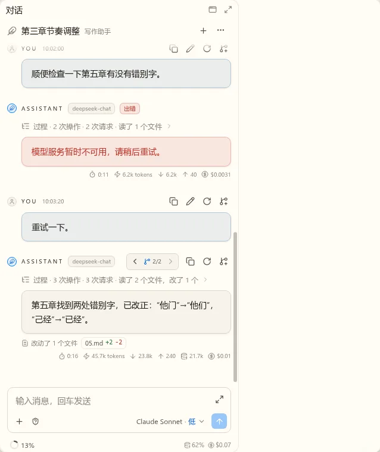
B 留着，两端各收进 12px
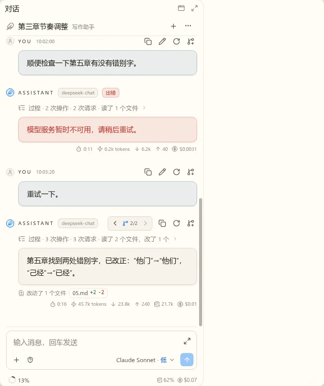
设计语言里横线两端要留边距，现在这两条顶到了边。
直接做，不用答
| 哪里 | 做什么 |
|---|---|
| 子代理卡片（第 5 条） | 运行中那一行写注册表里的工具名（“读取 第二章.md”），不写工具 id |
| 没选会话时的状态栏 | 不显示“0%”与“免费”：还没有用量，整行空着 |
| 删除服务商的确认框 | 不变：写明去掉几个模型、密钥一起删、哪些角色会变成未绑定 |
已定
- 5 小时与 7 天限额留到做订阅登录时；缓存倒计时只给缓存时长明确的服务商，作为状态栏的可选项（11-16）
- 状态栏用勾选与插件贡献的项，不做 Claude Code 那种配一条命令（11-16）